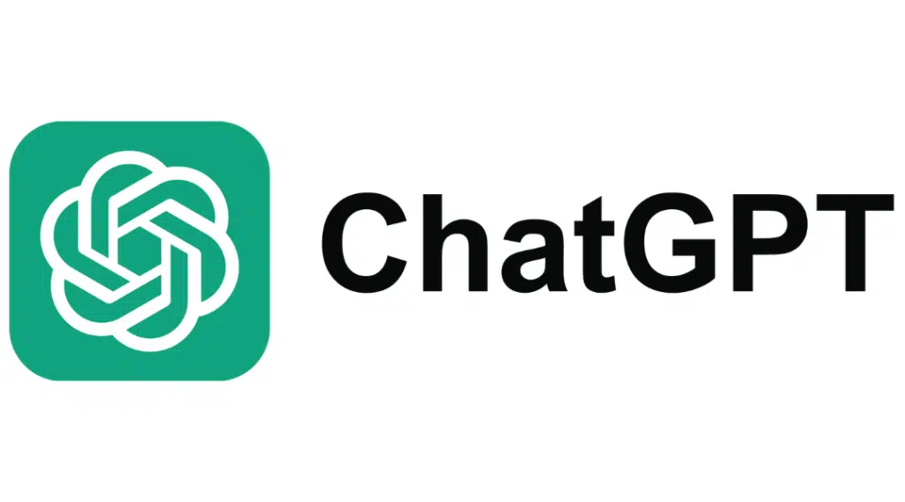

O que é Inteligência Artificial?
Definição
A Inteligência Artificial (IA) é um campo da computação que busca desenvolver sistemas capazes de aprender e tomar decisões.
Seu uso na educação cresce, ajudando professores e alunos com ferramentas inteligentes e personalizadas.
Benefícios da IA na Educação
Vantagens
A IA permite aprendizado personalizado, adaptando o conteúdo ao ritmo e estilo de cada aluno.
Ela também auxilia professores na correção de atividades e no acompanhamento de desempenho.
Desafios e Ética
Cuidados e limites
Há desafios relacionados à privacidade de dados e à dependência tecnológica.
É essencial que a IA seja usada de forma ética e responsável, garantindo igualdade de acesso.